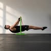

CANALE SELEZIONATO  Instagram @giospezia06 Dietro le quinte, momenti e aggiornamenti dal mio percorso. Apri il canale 01 / 08 CANALI
01 / TECH YOUTUBE Attiva il video 10 software gratuiti per lavorare meglio al PCUna selezione pratica di strumenti per organizzarsi, creare e proteggere il proprio lavoro digitale.Apri su YouTube
02 / PERSONALE YOUTUBE Attiva il video Piacere, sono Giovanni.Da dove nascono le mie passioni, tra tecnologia, crescita personale e calisthenics.Apri su YouTube
Una voce, più linguaggi.
Scegli un canale per scoprire dove ci troviamo.